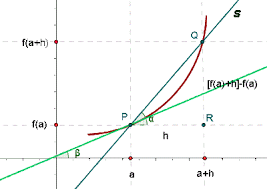
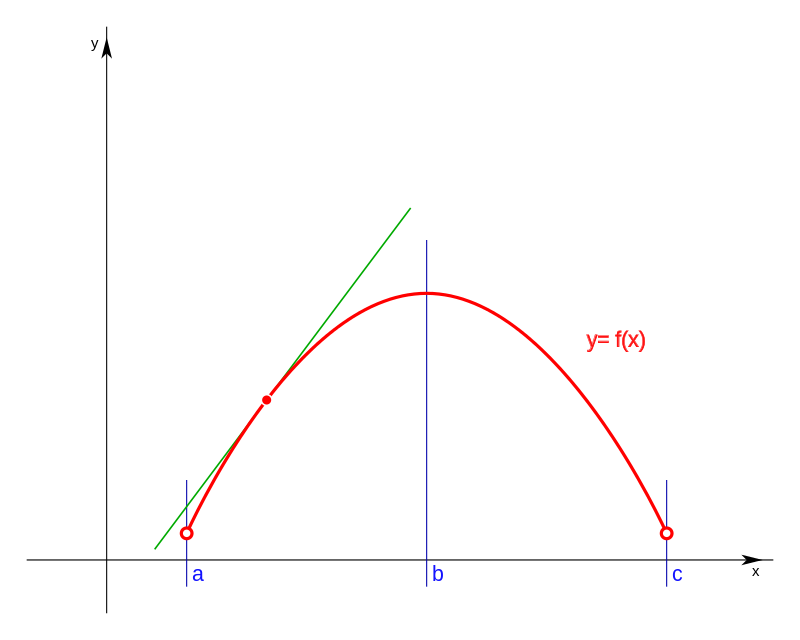
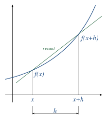

DERIBABILIDAD

Recordemos el concepto de derivadas para funciones de una variable independiente y = f (x).
Para lo cual formamos el incremento de la función y = f (x +x ) - f (x )
El cociente incremental será : y/x = f (x +x )/x - f (x )
Si este límite existe, es por definición, la derivada de y con respecto a x en el punto x =
Gráficamente, la derivada de y = f (x) en el punto x = representa la pendiente de la tangente
geométrica a la curva y = f( x) en el punto correspondiente a x = , en la figura 1 es la tg ().
Si en lugar de un punto fijo x = se toma un punto genérico x, la derivada de y = f (x) es a su vez
una función de x.
dy/dx = d f(x)/dx = f ' (x)
Veamos ahora el concepto de derivada para funciones de varias variables.
Comencemos con funciones de dos variables z = f(x ,y) función de las variables x e y
Consideremos un punto fijo (a , b) perteneciente al dominio de la función.
Formaremos los incrementos de z respecto de x e y
x z = f ( a +x ,b) - f (a ,b)
y z = f ( a ,b +y) - f (a ,b)

El primero es el incremento parcial que tiene la función cuando se incrementa la variable x, mientras
que la variable y permanece constante en y=b
El segundo es el incremento parcial que tiene la función cuando se incrementa la variable y, mientras que la variable x permanece constante en x = a.

INTERPRETACION GEOMÉTRICA
La ecuación z = f (x , y) tiene como representación gráfica una superficie en el espacio x y z
Al mantener y = yo constante, mientras que x varia, la ecuación z = f(x, yo) es la ecuación de la curva
Lo que resulta de la intersección de la superficie z = f (x, y) y el plano y = yo
Por lo tanto la derivada parcial de la función respecto de x nos representa la pendiente de la tangente a la curva en el punto (x, yo ). Por ejemplo cuando x = xo la tangente de es igual a Zx ( xo ,yo)
Es decir al variar y se obtienen las distintas curvas que son paralelas al plano z x.
La interpretación geométrica de la derivada parcial con respecto a y, es la misma que en el caso anterior, donde las curvas que se obtienen son las intersecciones de la superficie z = f (x , y) con los puntos x = Cte.
Así por ejemplo, la curva correspondiente a x = xo es z = f (xo, y) y la derivada de la función f(xo , y)/y nos da el valor de la pendiente de la recta tangente geométrica a la curva z = f (xo, y) en un punto de la misma.
RELACION ENTRE LA DERIVABILIDAD Y LA CONTINUIDAD

Demostraremos un teorema que relaciona la continuidad de una función con su derivabilidad. Para
demostrarlo, es conveniente recordar el teorema del valor medio o de Lagrange o del incremento finito, para funciones de una variable.
Si la función y = f(x) es continua en el intervalo
[a, b] y con derivada única (finita o infinita) en
todo punto de (a , b), hay por lo menos un punto
interior , / f (b) - f (a)/b-a= f( ) (Lagrange)
De este teorema se desprende que no basta con que una función f(x , y) sea derivable en un recinto, para garantizar su continuidad, sino que además es necesario que las derivadas
parciales sean acotadas en dicho recinto. PAGINA DE APOYO SOBRE EL TEMA: DERIVABILIDAD